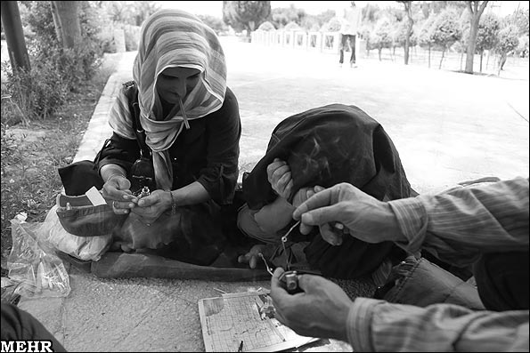

پذيرش > سایت نوشته ها > نقش مرد سالاري پنهان در گرایش زنان به اعتياد


 نقش مرد سالاري پنهان در گرایش زنان به اعتياد نقش مرد سالاري پنهان در گرایش زنان به اعتياد
26 مرداد 1391 - اکرم احقاقی - نسخه قابل چاپ
زماني صحبت از اعتياد، تصوير مردي را به خاطر مي آورد كه خمار و درمانده در گوشه ي خانه پر از فقر خود نشسته و در حال تزريق يا دود كردن مواد مخدر از جمله شيره، ترياك و هرويين است؛ آيا اين تصوير كليشه اي همچنان عينيت دارد؟
مصرف مواد در ايران سابقه اي طولاني دارد؛ خواص درماني ترياك توسط پزشكاني مانند محمد زكرياي رازي وابو علي سينا توصيف شده و ابوريحان بيروني اولين دانشمند اسلامي است كه به خاصيت اعتياد آور افيون اشاره كرده است.
در طي دهه هاي اخير شاهد گسترش انواع مواد مخدر بوده ایم، و امروز با دو نوع كلي مخدر صنعتي و سنتي روبرو هستيم؛ از طرف ديگر طيف استعمال كنندگان مواد مخدر نيز متاسفانه افزايش يافته و ما شاهد سوء مصرف آن در بين زنان و حتي كودكان نيز هستيم. اگر چه همچنان استعمال موادمخدر در شكل كلاسيك خود از الگويي مردسالارانه تبعيت مي كند و در بيشتر مطالعات نيز نگاه پژوهشگران به گونهاي است كه آن را مساله و معضل مردان مي دانند.
متاسفانه در آمارهاي رسمي و برنامههاي پيشگيري و درمان اعتياد نيز زنان چندان به حساب نميآيند. مسوولان مرتبط با اين موضوع، ترجيح مي دهند چشم هاي خود را بر روي اين واقعيت اجتماعي ببندند و بعضا به جاي پذيرش اين موضوع با انجام اقداماتي در صدد پاك كردن صورت مساله برمي آيند تا حل كردن آن.
شايد اولين دليل بي توجهي به اعتياد زنان بالا بودن آمار اعتياد در مردان باشد، بايد به اين موضوع اذعان داشت كه سوء مصرف مواد مخدر همچنان در مردان شايع تر از زنان است. ولي اين نكته را نيز نبايد فراموش كرد كه امروزه شاهد گرايش روزافزون زنان به مخدر و به خصوص مخدر صنعتي هستيم.
معضل اعتياد زنان در ايران چنان فراگير شده كه حتي خود مسوولان علارغم تلاش براي پاك كردن صورت مساله نمي توانند آن را انكار كنند.
اعتياد زنان در جامعه ما ناهنجارتر از اعتياد مردان تلقي ميشود. زنان معمولا از مراجعه به مراكز درماني كه بيشتر مراجعه كنندگان آن مردها هستند، خودداري ميكنند و ترجيح ميدهند كه به مراكزي كه فقط مختص بانوان است مراجعه كنند. شايد به همين دليل هم آماري كه در مورد ميزان جمعيت زنان معتاد در كشور وجود دارد دقيق نيست.
در حالي كه در مورد علل اعتياد مردان به مواردي از جمله بيكاري، مشكلات اقتصادي، عدم امكان ازدواج، نداشتن رابطه جنسي و ... اشاره مي شود، اغلب در مورد علت هاي گرايش زنان به مخدر سكوت ميشود.
پژوهشگران معتقدند كه اكثرا زنان از طريق يك غيرهمجنس معتاد به مواد مخدر کشیده ميشوند و در بيشتر مواقع نخستين بار پيشنهاد مصرف مواد به همراه اعضاي خانواده و افراد نزديك به زن اتفاق مي افتد.
مردان معتاد در اقشار پايين براي اينكه در موقع استعمال مواد مخدر مصاحبي داشته باشند، از سرزنش و انتقاد همسر خود بكاهند و در موقع تنگدستي و عدم تمكن مالي براي تهيه مواد مخدر او را به كارهاي ناپسند و نامشروع نظير گدايي، فروش مواد مخدر و خودفروشي بكشانند همسرانشان را معتاد ميكنند.
گاهي هم خانواده بستر گرايش به اعتياد است، يعني زنان براي شالودهشكني و شكستن تابعيت از مردان خانواده خواستار انجام اعمالي متضاد با خواسته هاي مردان و خانوادههاي خود مي شوند و به اعتياد روي مي آورند.
دردهاي جسماني، كسب لذت، كنجكاوي، كمبود روابط عاطفي، شكست عشقي، مشكلات رواني و افسردگي از جمله عوامل فردي گرايش زنان به مواد مخدر بوده است؛ عوامل خانوادگي نظير تنش ها، طلاق و جدايي از همسر، مشكلات خانوادگي، عدم كنترل و نظارت اعضاي خانواده بر رفتارهاي خود و مسايل اجتماعي نظير در دست بودن مواد، فشار دوستان و فراهم نبودن زمينه براي بروز توانمندي هاي زنان، تبعيض هايي كه براي كسب امتياز بين زنان و مردان وجود دارد، يا حتي مسايلي مانند لاغر شدن يا ژست هاي اجتماعي از عوامل گرايش زنان به مواد مخدر است.
در برخي باشگاههاي بدن سازي نيز وجود تبليغات دروغين در خصوص عدم اعتيادآور بودن شيشه و ايجاد لاغري، موجب گرايش زنان به مصرف شيشه مي شود.
برخي از دختران فراري نيز پس از فرار از خانه به دلايل گوناگون به مصرف هروئين و ترياك روي مي آورند يا توسط برخي از افراد، آلوده به اعتياد مي شوند.
در اين راستا ليلي ارشد مددكار اجتماعي در مورد علت گرايش زنان به اعتياد معتقد است: اكثر قريب به اتفاق زنان توسط غير هم جنسان خود يعني مردان تشويق به استعمال مواد مخدر و محرك زا مي شوند و دليل عمده آن عدم آگاهي زنان و سودجويي است كه برخي مردان از اين موضوع مي برند.
ارشد در اين ارتباط توضيح داد: مردان معتاد با اعتياد زنان شان به موادمخدر به خواسته هاي خود مي رسند از جمله در خانواده هاي كم درآمد وقتي همسر يك مرد معتاد، نيز معتاد مي شود از يك طرف كمتر شاهد مخالفت زنش با اين موضوع است و از طرف ديگر هزينه هاي موادشان را نيز راحت تر تامين مي كند. از جمله اينكه همسر معتادش را مجبور مي كند اقدام به اعمالي همچون تكدي گري و روسپي گري براي تامين هزينه موادشان بكنند. در خانواده هايي كه سطح تحصيلات كمي بالاتر است زن براي همراهي و همدلي با شوهر خود بعضا اقدام به مصرف مواد مي كند و در واقع استدلال شان اين است كه از اين طريق احساس همدلي بيشتري در بين شان وجود دارد.
اين مددكار اجتماعي در اين ارتباط افزود: من با دختران معتاد زيادي مواجه شدم كه به خاطر دوستان پسرشان و يا خواستگاران شان و همچنين همكلاسي هايشان با مواد آشنا و به آن گرايش پيدا كرده اند و اين افراد به آنها گفته اند كه مثلا مصرف شيشه و... اعتياد ندارد و اگر تجربه كنيد مي بينيد كه چقدر خوب است و مثل ما حالت خوب مي شود. حتي دانشجويان دختر دانشگاه دولتي را بعضا مشاهده مي كنيم كه از يك خانواده متعادل و تحصيل كرده اند و چون اطلاعات درستي در اين زمينه ندارند به راحتي در اين زمينه فريب خورده اند. ولي همانطور كه گفتم مشوقان اصلي گرايش زنان از هر گروه به مواد مخدر غيرهمجنسان آنها هستند.
وي با بيان اينكه يكي ديگر از دلايل گرايش به اعتياد مي تواند ازدواج زود هنگام در سنين كودكي و نوجواني باشد، درباره ازدواجي كه آگاهانه و با علاقه نيست و بر اساس اجبار و زود هنگام رخ مي دهد توضيح داد: اين ازدواج زود هنگام ميتواند عواقب تلخي را به همراه داشته باشد از جمله اينكه اين دختران به خاطر عدم علاقه اي كه به همسر و خانواده خود دارند، و عدم توانايي پذيرش مسووليت زندگي مشترك، خانواده را ترك مي كنند و در مسير زندگي دچار اعتياد مي شوند و در واقع بايد گفت گسست هاي خانوادگي و اعتياد نزديكان زن نيز بر اين موضوع تاثيرگذار است.
دكتر سعيد معيدفر استاد بازنشسته جامعه شناسي دانشگاه تهران نيز در مورد علل گرايش افراد از جمله زنان به اعتياد با اعتقاد به اينكه گرايش افراد به اعتياد به صورت عام به دلايل فراواني صورت مي گيرد، اظهار داشت: در گذشته، زنان بيشتر زماني معتاد مي شدند كه در خانواد هايشان شوهر، پدر و يا برادر معتاد وجود داشت و اكنون دلايل ديگري نيز به اين موضوع اضافه شده است.
اين دانش يار بازنشسته گروه جامعه شناسي دانشگاه تهران با بيان اينكه در حال حاضر شاهد استفاده از مواد مخدر صنعتي از جمله شيشه و كراك در بين معتادان از جمله زنان هستيم در توضيح علت اين امر گفت: استعمال مواد مخدر سنتي معمولا چهره يك فرد را از حالت عادي خارج مي كند و به چهره اي درمي آورد كه معمولا در فيلم ها مشاهده مي كنيم. افرادي كثيف، بدمنظره و اغلب كارتن خواب كه به راحتي ديگران متوجه اعتياد وي مي شوند. ولي در هنگام استفاده از مواد مخدر صنعتي اين ويژگيها كمتر بروز ميكند؛ مي بينيم كه حتي افرادي كه داراي پايگاه اقتصادي بالاتري هستند از اين مواد استفاده مي كنند و چون در چهره شان كمتر تبلور پيدا مي كند افراد ديگر به راحتي متوجه اعتياد آنها نمي شوند در نتيجه ميزان طرد شدنشان از جامعه نيز كمتر است.
وي با اعتقاد بر اينكه يكي ديگر از دلايلي كه باعث گرايش زنان به اعتياد مي شود افسردگي است افزود: هرچه ميزان طرد شدن افراد از جامعه و خانواده بيشتر شود و در انزواي بيشتري قرار گيرد، امكان گرايش آنها به الكل و مواد مخدر نيز افزون تر مي شود چرا كه مواد مخدر و محرك زا اين حس منفي و منزوي بودن را براي مدتي برطرف مي كند. در حالي كه در واقع فرد با مصرف آن منزوي تر مي شود.
وي با بيان اينكه دلايل افسردگي در زنان نيز مختلف است تاكيد كرد: زنان با توجه به شرايط اجتماعي و تحصيلاتشان در حال حاضر از امكان كمتري نسبت به مردان جهت حضور عملي در عرصه هاي اجتماعي برخوردارند، گرچه اين فرصت نسبت به قبل بيشتر شده است؛ زنان تلاش مي كنند كه جايگاه اجتماعي خود را تغيير دهند و بسياري از تصورات كليشه اي كه در مورد آنان وجود دارد را تغييردهند. ولي وقتي زمينه و فرصت ها براي تحقق اين گرايش زنان وجود ندارد، در حالي كه آگاهي زنان به حقوقشان بيشتر شده، اين تبعيضها بعضا باعث افسردگي مي شود و برخي از آنها براي تحقق اين نياز و گرايش خود دست به اقدامات ناهنجاري مي زنند كه از جمله اين اقدامات ناهنجار «گرايش به مواد مخدر» است.
اين استاد جامعه شناسي با بيان اينكه اين عوامل باعث روي آوردن زنان به ديگر آسيب هاي اجتماعي از جمله روسپي گري نيز مي شود ادامه داد: در حال حاضر در مورد اين موضوع، روسپياني هستند كه از لحاظ اقتصادي چندان فقير نيستند ولي براي اينكه بتوانند درآمد بيشتري كسب كنند و فرصت هاي بيشتري را براي رفاه و ارتقاء خود داشته باشند به سمت روسپيگري مي روند و در طي اين مسير خواه و ناخواه ممكن است به استفاده از مواد مخدر نيز گرايش پيدا كنند.
اين استاد بازنشسته دانشگاه تهران در تشريح ديگر دلايل گرايش زنان به اعتياد افزود: از طرف ديگر گاهي عضويت در كلوپها و شركت در مهمانيهاي خاص كه در حالت عادي برگزاري آن در جامعه از نظر قانوني پذيرفته شده نيست و مجوز ندارد موجب گرايش جوانان اعم از دختر و پسر به مواد مخدر مي شود. دختران و پسراني هستند كه مي خواهند به نوعي در تفريحات خاصي درگير شوند و ممكن است اين تفريحات مجوز نداشته باشد. به همين بابت اقدام به عضويت در كلوپها و شركت در مهماني هايي مي كنند كه بعضا در آن مواد مخدر استعمال ميشود.
در اين راستا برخي از كارشناسان آسيب هاي اجتماعي اين هشدار را مطرح مي كنند كه در بين برخي از اقشار محدود جامعه مصرف و گرايش به مواد مخدر تبديل به يك ژست اجتماعي شده است.
ليلي ارشد در ارتباط با اعتقاد برخي از افراد مبني بر اينكه كه مصرف مواد مخدر در بين برخي از زنان بخصوص زناني از طبقه بالا، مرفه و بعضا تحصيل كرده و روشنفكر تبديل به يك ژست اجتماعي شده، گفت: بايد در اين زمينه تحقيق كرد، البته اين موضوع را در بين بخش بسيار محدودي از گروه هاي اجتماعي و دانشحويي مي بينيم كه تصور مي كنند يكي از ابزارهاي تفريح، لذت و داشتن اوقات خوش، مصرف اينگونه مواد است و بايد به آنها آموخت كه چنين تلقي نادرست است. قبل از اينكه اين موضوع فراگير شود بايد اين موضوع آموزش داده شود و شايد بتوان اين تعبير را به كار برد كه مصرف اين مواد بين بخش بسيار محدودي از این افراد ممكن است تبديل به يك ژست اجتماعي شده باشد.
وي در اين راستا افزود: آگاهی دادن به خانواده ها می تواند از رواج همچین رویه ای جلوگیری کند. جوانان ما به دنبال دريافت احترام و ديده شدن هستند و بايد به آنها آموزش داد كه با اعتياد و مصرف مواد مخدر نمي توانند به اين هدف دست پيدا كنند و راه كسب احترام در انجام رفتارها و پيگيري آرمان هاي اجتماعيِ مناسب است.
دكتر معيدفر نيز در اين ارتباط گفت: در تحقيقاتي كه در دهه اول 80 صورت گرفت متاسفانه مشاهده شد كه در بين دانشجويان بسيار محدودي، استفاده از مشروبات الكلي و گرايش به آن بعضا تبديل به پرستيژ اجتماعي شده و حتي اين تصور به وجود آمده بود كه كساني كه چنين گرايشي دارند از حقوق و برتري نسبت به كساني كه اين كار را نميكنند برخوردارند.
معيدفر افزود: متاسفانه بعضا مي بينيم كه امروزه حتي رقابت و پز دادن در اين عرصه نيز راه يافته و استفاده از مواد مخدر و محرك در بين قشر بسيار محدودي به صورت ژست در آمده است. متاسفانه اين موضوع را فقط در بحث اعتياد نميبينيم گاهي اوقات داشتن روابط جنسي خارج از عرف نيز در بين برخي از اقشار محدود، تبديل به امر مثبتي شده و من مراجعيني داشتم كه مي گفتند دوستان مان ما را مورد سرزنش قرار مي دهند كه چرا دوست پسر نداريد يا رابطه جنسي با آنها نداريد و اين نكته جاي تامل دارد.
وي در اين ارتباط ادامه داد: برخي از افراد كه به مواد مخدر صنعتي و محرك گرايش پيدا كرده اند اين تلقي را دارند كه معتاد نيستند و مي گويند براي بهره مند شدن و پذيرفته شدن در جمع اين كار را مي كنيم.
موضوع ديگر در اين زمينه نوع برخورد جامعه با زنان معتاد است، برچسب هاي جامعه براي زنان چند برابر مردان است، و شايد به همين دليل باشد كه زنان معتاد، مشكل خود را پنهان مي كنند، و براي درمان به كلينيك ها مراجعه نمی كنند.
در حالي كه در جامعه از اعتياد مردان به عنوان بيماري ياد مي شود، استفاده زنان از مواد مخدر يك انحراف مضاعف قلمداد مي شود. به زنان معتاد اغلب به عنوان خاطيان از نقش هاي اجتماعي و افرادي كه نقش هاي مادري و نظارتي خود را فراموش كرده اند، نگاه مي شود. همين مساله آنها را بيشتر از مردان به انزواي اجتماعي مي كشاند و با قرار گرفتن زير برچسب منحرف، عواقب اجتماعي و قانوني حادتري پيش رويشان قرار مي گيرد.
مانع ديگر در درمان اعتياد زنان را بايد كم بودن حمايت همسر و خانواده از زنان معتاد عنوان كرد. مردان معتاد معمولا حمايت همسران خود را در سالهاي درمان دريافت مي كنند، اما زنان معتاد از همان ابتداي درمان از حمايت كمتري برخوردارند. به علاوه زنان و مادران معتاد به علت مشكلات ناشي از مراقبت فرزندان با موانع بسياري براي درمان هاي اقامتي روبرو هستند. فقر اقتصادي زنان نيز مانع ديگري بر سر راه درمان است.
ليلي ارشد در این ارتباط معتقد است: به خانمها اصولا در جامعه انگ ها و برچسب هاي زيادي زده مي شود. همان طور كه گفتم اعتياد براي مردان يك بيماري است ولي براي زنان همراه با خصوصيات ناخوشايندي است و برچسب هاي نامناسبي به آن زده مي شود. اين برچسب ها مشكلات زنان را افزايش مي دهد، باعث طرد آنها از خانواده ها و جامعه مي شود و شرايط را براي بهبودي آنها بدتر مي كند و چون در جامعه ما اعتياد براي زنان موضوعي بسيار ضداخلاقي است خانم ها كمتر تمايل پيدا مي كنند كه در اين زمينه به كلينيك ها مراجعه كنند چرا كه تصور مي كنند شناخته مي شوند و از اين امر واهمه دارند.
مسوول كلينيك مددكاري «يارا» در مورد كمبود كلينك هاي مخصوص زنان اظهار داشت: اكنون در مورد حضور زنان و مردان در كلينيك هاي مختلط مانعي وجود ندارد، ولي خيلي از خانم ها به اين كلينيك ها به خاطر خجالت مراجعه نمي كنند و ترجيح مي دهند به محيط هاي امن تر و جايي كه بيشتر آنها خانم هستند براي معالجه مراجعه كنند.
وي بر اين نكته نيز تاكيد كرد كه تعداد خانم هاي معتاد نسبت به آقايان خيلي كمتر است و به همين بابت تعداد كلينيك هاي آنها نيز كمتر است: همانطور كه گفتم خانمها ترجيح مي دهند به كلينيك هايي مراجعه كنند كه امنيت بيشتري در آن داشته باشند و كمتر شناخته شوند. از طرف ديگر، بايد توجه داشت كه در مورد مصرف برخي از موادمخدر از جمله شيشه با روش هاي غير دارويي و مشاوره هاي هفتگي مي توان اين موضوع را حل كرد. ولي در ايران اين موضوع هزينه بر است و براي خيلي از اين زنان و افراد، امكان تامين چنين هزينه اي وجود ندارد. مناسب است از چنين افرادي برای برخورداری از این خدمات كمك شود مثلا مكانيزمي همچون بيمه انديشيده شود؛ چرا كه خيلي از زنان به خاطر اينكه هزينه درمان را ندارند از مراجعه به كلينيك ها خودداري مي كنند.
از طرف ديگر، مصرف مواد در زنان به خصوص در شكل تزريق، با آسيبهاي اجتماعي ديگري مانند فرار از منزل و روسپيگري همراه است. احتمال سوء استفادههاي جنسي از زنان معتاد چهاربرابر بيشتر است و اغلب اين زنان براي تامين معاش خود به روسپيگري روی می آورند. از اين رو ست كه زنان، نيازمند اقدامات درماني و بازتواني اختصاصي هستند و بايد شرايط خاص آنها در مراحل مختلف اعتياد و درمان در نظر گرفته شود.
عوارض اعتياد زنان فقط به مسايل اجتماعي و خانوادگي محدود نمي شود؛ عوارضي چون ابتلا به بيماريهاي رواني، ابتلا به بيماريهاي جسمي از جمله سكتههاي قلبي، مغزي، سرطان لثه و سرطان دهانه رحم با مصرف مواد مخدر در زنان افزايش پيدا مي كند. همچنين استفاده از اين مواد، منجر به عوارض سوء در دوران حاملگي، يائسگي زودهنگام، ناباروري يا باروري ديرهنگام، مرگ و مير پيش از زايمان، سقط جنين، تولد نوزاد نارس يا تولد نوزاد كم وزن و مشكلات رشدي و رفتاري منجر مي شود.
معيدفر نیز در مورد تاثيرات اجتماعي گرايش افراد از جمله زنان به مواد مخدر و محرك زا گفت: استفاده از مواد مخدر و مشروبات الكلي به شكل زياد باعث مي شود كه فرد به تدريج از يك شخص مفيد براي جامعه و فردي كه مي تواند تاثيرات مهمي در خانواده و جامعه خود داشته باشد به فردي بي مصرف تبديل شود و از آن به عنوان يك عنصر مثبت در جامعه ياد نشود و حتي برخي وي را سربار جامعه بدانند.
اين استاد بازنشسته دانشگاه تهران در اين ارتباط ادامه داد: گرايش به مواد مخدر، پيامدهاي منفي براي فرد هم در خانواده و هم در اجتماع دارد و باعث افزايش آسيبهاي اجتماعي از جمله خشونت اجتماعي و ازهمگسيختگي خانواده مي شود که اين آثار منفي براي زنان شديدتر است. چرا كه نگرش اجتماعي به زنان معتاد، متفاوت از مردان است و زيان هايي كه از بابت اين موضوع متوجه زنان معتاد مي شود بسيار زيادتر است.
ليلي ارشد در مورد شدت داشتن خشونت در مورد زناني كه به مواد مخدر اعتياد دارند بيان داشت: ما اين موضوع را در جامعه مشاهده مي كنيم. مثلا دختري كه در خانواده تنها فردي است كه اعتياد دارد، چون خانواده آگاهي لازم در مورد چگونگي برخورد با آن را ندارد و به دليل اعتياد او تجربه هاي سختي دارند، تصور مي كنند كه با خشونت، كتك زدن و تحقير كردن، شرايط آن دختر بهتر مي شود. برخي از زنان معتاد نیز به خاطر تامين هزينه اعتيادشان مجبور هستند كه انجام به اقداماتي چون تكدي گري و روسپي گري بكنند و در اين زمينه مورد خشونت قرار مي گيرند.
وي در اين ارتباط با ذكر مثال ديگري گفت: زماني كه زن ازدواج كرده باشد و معتاد نيز باشد به نوعي ديگر آسيب مي بيند، چرا كه وظايف خود را نسبت به فرزندان و همسرش نمي تواند به درستي انجام دهد و از جانب مردان نيز اين موضوع پذيرفته نيست و چون قادر به انجام وظايف خود نيست مورد بيمهري و خشونت در خانواده قرار ميگيرد.
تفاوت در شيوههاي درمان زنان و مردان هم موضوع قابل توجهی است، به گونهاي كه به اذعان كارشناسانِ مراكز درماني، تجربه نشان داده است كه زنان تمام مراحل سم زدايي، شركت در جلسات مشاوره و درمان را بهتر پيگيري مي كنند و بازگشت مجدد آنها به سمت مصرف مواد از مردان كمتر است و در صورتي كه مورد حمايتهاي اجتماعي خانواده و اطرافيان خود قرار گيرند به شيوههاي درمان پاسخ بهتري ميدهند
بهترين و سريعترين راه براي جلوگيري از شروع اعتياد يا روي آوري دوباره زنان به اعتياد، توانمندسازي زنان است.
آموزش مهارتهاي زندگي از جمله چگونگي رويارويي با استرسها، شيوه نه گفتن، شيوه حل مساله به صورت فردي و گروهي، مهم ترين گامي است كه بايد براي توانمندسازي زنان برداشته شود. در واقع، چون هنوز اعتياد در بين زنان محدودتر از مردان است، بايد راه هاي مقابله با آن را از همين ابتدا پيدا كرد. جنبه ديگر، توانمندسازي زنان در مورد مسائل اقتصادي است. آموزش مهارتهاي درآمدزا، كمك به اشتغال زنان و تشويق آنها به فعاليت هاي اقتصادي گروهي مي تواند گامي مهم در اين راه باشد.
ليلي ارشد در مورد اهميت نحوه ي رفتار جامعه با زناني كه اقدام به ترك اعتياد كرده اند اظهار داشت: زناني كه اقدام به معالجه خود مي كنند بعد از بازگشت به جامعه بعضا مي بينيم كه مورد پذيرش از سوي جامعه قرار نمي گيرند. در صورتي كه اين موضوع اشتباه است و بايد تلاش كنيم كه آنها به زندگي عادي خود برگردند، زمينه اشتغال آنها را فراهم كنيم و آنها را بپذيريم. اين تصور كه چون زني معتاد بوده بايد پرونده آن به طور كامل بسته شود و امكان داشتن يك زندگي معمولي را ندارد، اشتباه است.
اين مددكار اجتماعي ادامه داد: كساني كه گرايش به شيشه، موادمخدر و محرك زا نيز دارند با دريافت مشاوره، دارو و درمان، امكان و اميد بازگشت به زندگي عادي براي آنها وجود دارد و ما بايد اين امكان را براي آنها فراهم كنيم. حمايت هاي اجتماعي را از آنها بيشتر كنيم. نبايد آنها را طرد كنيم و بايد بدانيم كه مسائل زنان معتاد بسيار پيچيده تر و بيشتر از مردان معتاد است و كمك به آنها در واقع، كمك به سلامت جامعه است.
با توجه به آنچه كه بيان شد و با در نظر گرفتن ديدگاه هاي محققان و كارشناسان، شايد بتوان اين عقيده و نتيجه را باور كرد كه مردسالاري پنهان در كليه لايه هاي زندگي اجتماعي و خانوادگي، نقش مهمي در روي آوردن زنان به اعتياد دارد و از طرف ديگر مسوولان امر نيز بايد، چشم هاي خود را بر اين واقعيت هاي اجتماعي باز كنند و به فكر حل ريشه اي اين مسئله باشند. چرا كه آسيب هاي اجتماعي و خانوادگيِ حاصل از اعتياد زنان، با توجه به نقش و جايگاه آنها، بيشتر از اعتياد مردان است.
تا قانون خانواده برابر
ارسال به
بالاترین
،
توییتر
،
فریندفید
،
فیسبوک
در همين بخش :
 یک خبر تلخ؟ یک قانونشکنی؟ یک تصمیم بخشنامهای جدید؟ یک خبر تلخ؟ یک قانونشکنی؟ یک تصمیم بخشنامهای جدید؟
چرا بایست به سکسوالیته پرداخت؟ / نفیسه آزاد
آزارجنسی خانگی؛ «قربانی» نه، «نجات یافته»
زنان، بزرگترین بازندگان بهار عرب
سانسور از دیدگاه جنسیتی/الهه امانی
ديگر بخش ها :
طرح یک میلیون امضا
|
مقالات
|
سایت نوشته ها
|
اخبار
|
گزارش كمپين
|
گفت و گو
|
علیه سکوت
|
كوچه به كوچه
|
نامه های شما
|
گزارش ویژه
|
گفتگو با اعضا
|
ویژه سالگرد کمپین
|
تصویر برابری
|
دل آرام علی
|
تریبون
|
مقالات
|
تاریخ شفاهی
|
خارج از چارچوب
|
کتابخانه
|
درباره کمپین
|
کمپین در شهرها
|
کمپین در بند
|
صدای تغییر
|
ویژه 22 خرداد
|
لایحه حمایت از خانواده
|
گالری
|
عشا مومنی
|
امیر یعقوبعلی
|
خدیجه مقدم
|
راحله عسگری زاده و نسیم خسروی
|
پروین اردلان،جلوه جواهری، مریم حسین خواه، ناهید کشاورز
|
زینب پیغمبرزاده
|
سعیده امین، سارا ایمانیان، محبوبه حسین زاده، ناهید کشاورز و همایون نامی
|
احترام شادفر
|
نسیم سرابندی زاده،فاطمه دهدشتی
|
وبلاگ مهمان
|
پرونده خرم آباد
|
دستگیری ها
|
مریم مالک
|
پرستو اللهیاری
|
مهرنوش اعتمادی
|
سمیه رشیدی
|
Other Languages
|
همراهان
|
«فراخوان کمپین ده روز با بهاره هدایت»
| English
|